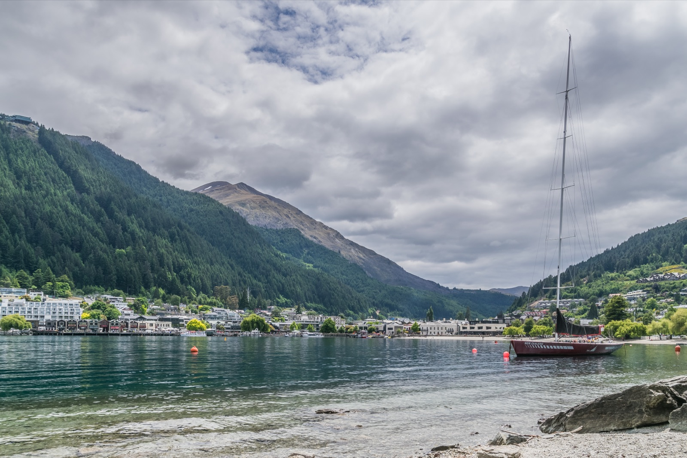
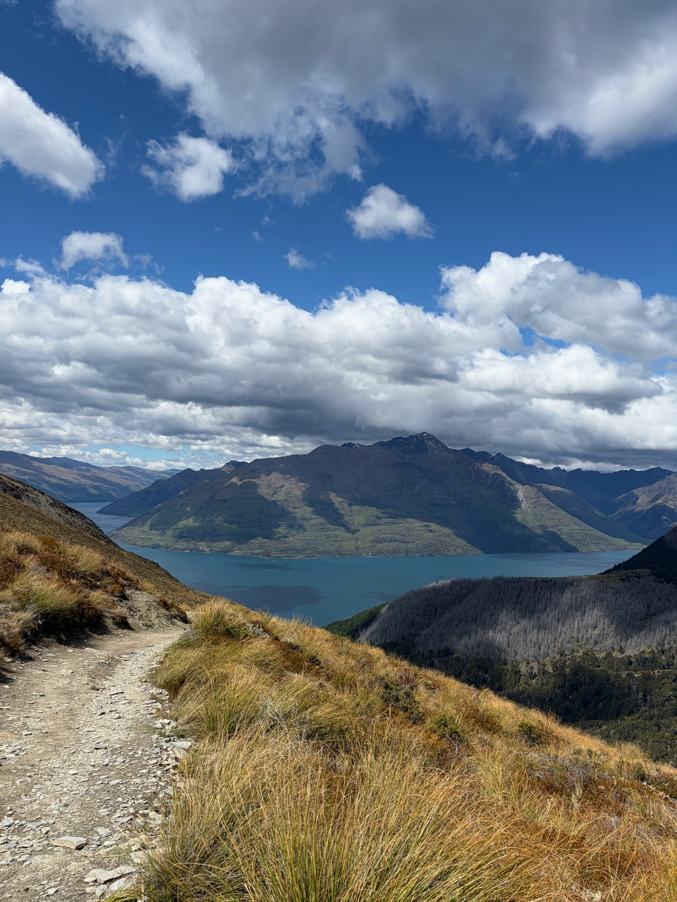
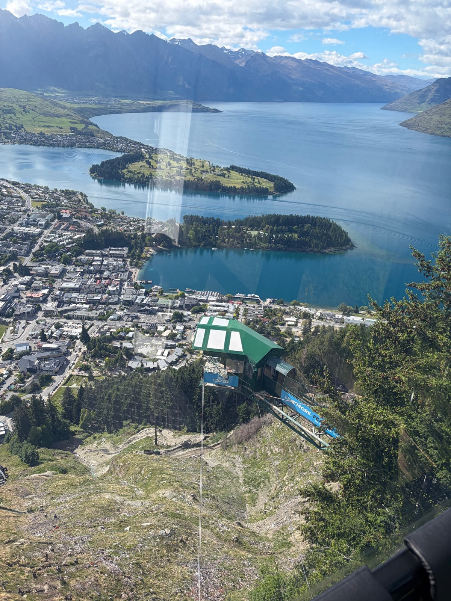

"I have coeliac disease"NZ uses UK spelling — widely understood
Grocery Stores
FreshChoice Queenstown — main supermarket on Gorge Road with free-from range
McKibbon's of Royalburn — specialty food shop with GF options
Safe Cuisines
Vietnamese — pho and rice noodle dishes naturally GF
Japanese — sashimi, rice-based dishes
Modern NZ — many restaurants accommodate GF well
Score Breakdown
Dedicated GF restaurants
Menu labeling
Staff knowledge & safety
Density of GF dining
Grocery availability
6/10Overall GF Score
Moderate
Where to Stay
Recommended

Where I stayed
Millennium Hotel Queenstown
Queenstown CBD · Frankton Road
Why Stay Here
Central location a short walk from restaurants, shops, and the lakefront. The Observatory Restaurant on-site serves breakfast and dinner with garden views.
Didn't stay here but it looks awesome — just a smidge further from town than I wanted to be. Luxury retreat with breathtaking lake views, spa tubs, and a Mediterranean restaurant on-site.
Permanently closed as of 2025. Previously known for GF orange cake and seafood dishes.
Landmarks & Must-See Spots
3 spots
Ben Lomond Track
Nature
One of Queenstown's most rewarding hikes. The track climbs from the Skyline Gondola station to the summit at 1,748m with panoramic views of Lake Wakatipu, The Remarkables, and surrounding ranges.
Above Queenstown · Ben Lomond Scenic Reserve
Went here

Skyline Gondola Viewpoint
Nature
The gondola takes you up Bob's Peak (790m) for one of the most photographed views in New Zealand. Lake Wakatipu stretches out below with the Remarkables rising behind.
Bob's Peak · Brecon Street
Went here

Onsen Hot Pools
Spa
Private cedar hot tubs perched above the Shotover River canyon. Japanese-inspired open-air soaking with mountain views. Book well in advance.
Arthurs Point · 10 min drive
Traveler recommended
Neighborhoods
Queenstown CBD
Compact & buzzing
The walkable town centre along Shotover Street, The Mall, and Church Street. All the restaurants, bars, and booking offices are within a few blocks.
Steamer Wharf
Waterfront dining
The lakefront dining precinct at the bottom of the town centre. White & Wong's, Saigon Kingdom, and Perky's floating bar are all here. Great sunset views over Lake Wakatipu.
Frankton
Practical & local
The commercial area between the airport and Queenstown. Home to Remarkables Park shopping centre and larger supermarkets. The lakeside trail from town is a beautiful walk or cycle.
Arrowtown
Historic & quaint
A charming former gold-mining village 20 minutes from Queenstown. Tree-lined Buckingham Street has boutique shops, cafés, and the Chinese Settlement historic area.
Things to Do
Adventure & Activities
Skyline Gondola & Luge
Ticketed
Ride the gondola up Bob's Peak for incredible views, then race down the mountain on luge tracks. Blue track (gentle) or Red track (banked corners and tunnels).
Queenstown's iconic jet boat ride through narrow Shotover River canyons at 85kph. 360-degree spins, canyon walls inches away. Shuttle from town included.
The world's first commercial bungy jump. A 43-metre plunge from the historic Kawarau Bridge over the turquoise river. AJ Hackett has been running jumps here since 1988.
New Zealand's highest bungy at 134 metres. Suspended in a pod over the Nevis Valley, the free-fall lasts 8.5 seconds. Transport from Queenstown included.
Private cedar hot tubs above the Shotover River canyon. Japanese-inspired open-air soaking with mountain views. Books out weeks in advance. Courtesy shuttle from town.
A challenging full-day hike to the 1,748m summit above Queenstown. Start from the Gondola top station or the Tiki Trail. Stunning alpine scenery — bring layers and water.
6–8 hours Above town
Getting Around
Walking
Queenstown CBD is tiny — everything in town is within a 10-minute walk. The lakefront trail to Frankton is a beautiful 7km path.
Bus
Orbus public buses connect Queenstown, Frankton, Arrowtown, and the airport. Cheap and regular service.
Orbus Queenstown
Rental Car
Essential for exploring beyond town — Milford Sound, Glenorchy, and the wider Otago region. Pick up at the airport.
Shuttles
Activity operators like Shotover Jet and AJ Hackett run free shuttles from the town centre. Many hotels also offer airport shuttles.
Airport
Queenstown Airport (ZQN) is just 8km from town with one of the world's most scenic approaches. The Orbus #1 bus runs to/from the airport, or a taxi takes about 10 minutes.
What to Pack
Late spring / summer in NZ
Comfortable hiking bootsEssential for Ben Lomond and Queenstown Hill tracks. Trail shoes at minimum.
Essential
Celiac travel cardA printed card explaining celiac disease. English-speaking country, but helpful for kitchen staff.
Essential
Portable gluten-free snacksFor hikes and road trips where GF options are nonexistent. Trail mix, GF bars, rice cakes.
Essential
Power adapter (Type I)New Zealand uses Type I plugs (angled two-pin). Same as Australia.
New Zealand
Sunscreen (SPF 50+)NZ UV levels are extreme — the ozone layer is thinner here. Burn time can be under 10 minutes.
New Zealand
Layers and wind shellMountain weather changes fast. Warm mornings can turn cold and windy at altitude.
Queenstown
SwimsuitFor the Onsen Hot Pools, lake swimming, and hotel spa facilities.
Queenstown
Travel Tips
Queenstown is tiny — you can walk everywhere in town. Save the rental car for day trips to Milford Sound, Glenorchy, or Wanaka.
Book Onsen Hot Pools weeks in advance. They are heavily booked, especially in peak season (December – February).
The Fergburger queue is famous for a reason — join it at least once. They open at 8am and often have shorter lines early.
Contactless payment is accepted everywhere. NZD is the currency, and tipping is not expected (but appreciated).
Start the Ben Lomond hike early. The summit is exposed and weather can roll in fast. Check the MetService forecast before heading up.
The Skyline Gondola runs until 9pm — consider riding up for sunset views. It's less crowded in the evening.
What I'd Do Differently
I'd book the Onsen Hot Pools further in advance — they were sold out for most of the days I was there.
I'd try more of the restaurants on Steamer Wharf — the waterfront vibe at sunset is hard to beat.
Have a tip or comment?
Found a great GF spot in Queenstown? I'd love to hear from you.